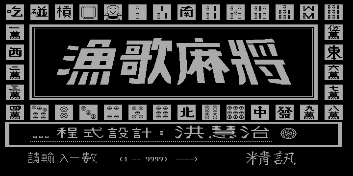
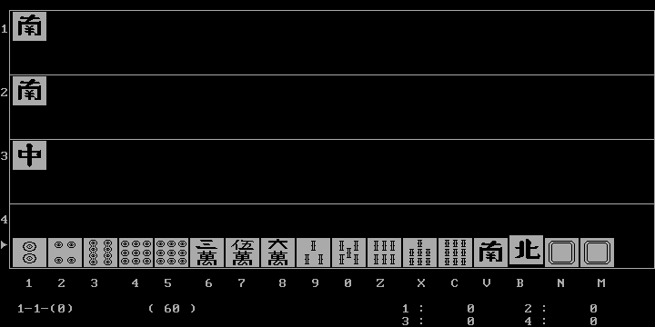

名稱：漁歌麻將 (中文版)
簡介：精訊1986年出品的１６張麻將遊戲，由洪慧治所撰寫。整個遊戲非常陽春，只能算是
一個小品遊戲而已，加上程式有些問題，例如無法明槓、甚至有時無法胡牌等，因此
並不太值得玩。


限制：只能用單色螢幕（Hercules）玩。DosBox要設定machine=hercules。
保護：無
操作：
【選牌】按相對位置鍵：1 2 3 4 5 6 7 8 9 0 Z X C V B N M
【棄牌】按空白鍵
【吃、碰、槓牌】遊戲會自動提示，若要吃碰槓，按Y鍵，不要的話，按其他鍵
【暗槓】按K鍵，再按要暗槓牌的相對位置鍵
【明槓】按J鍵，再按要明槓牌的相對位置鍵
【聽牌】按F9鍵，螢幕左下角會出現笑臉符號（自動胡牌），按F10取消
【自摸胡牌】按H鍵（遊戲會自動胡對方放槍的牌，但有時無法胡）
【聲音】F1開啟，F2關閉
【速度】F5加快，F6減慢
說明：計分方式
1.基本分50分。
2.自摸：加60分，其餘三位玩家各扣20分。
3.莊家：20分。
4.連莊：每連一莊40分。
5.槓牌：有槓牌時20分。
6.碰碰胡：80分。
7.風圈牌：20分。
8.三元牌：每刻20分。